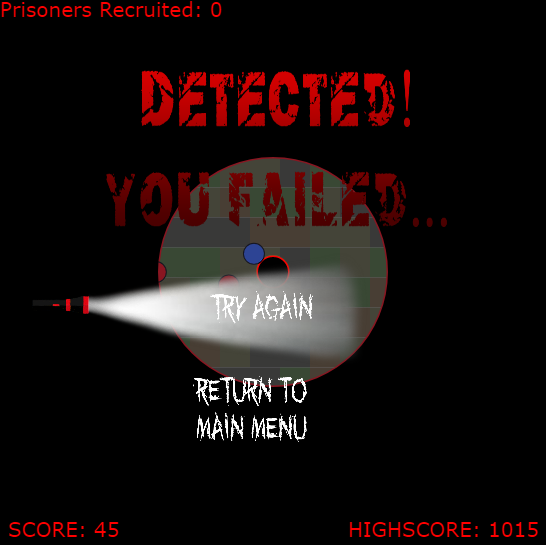
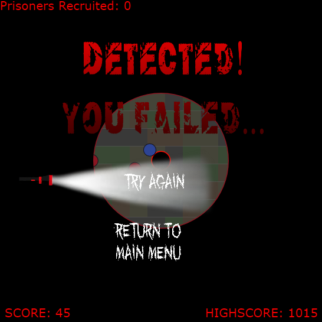

Eisaku Imura
Gameplay Engineer
Gameplay Engineer
Current and past projects.
Talchul is a top-down stealth game where players are a refugee trying to escape a forced labor camp.
As you try to escape, players can meet other prisoners who join you to increase your ability to scout, but also increase the likelihood you'll be detected by guards.
Inspiration for the game came from current world events that occurred in 2016 and still continues to this day.
The original pitch for the game involved spreading awareness of North Korea's forced labor camps and the name of the game came from the Korean word for "to escape".


Talchul starts the player off in a hidden state where the guards will not detect the player. The moment the player starts moving is when the prison break starts. The red circle represents supporters that you can touch to gather them and the blue circle represents the guards. The player has two circles around them. The larger outer circle represents the vision the player has around them and the second smaller circle represents the level of suspicious activity that can be detected by guards. The vision circle radius can be gradually increased by gathering more supporters, but at the same gathering more supporters will increase your suspicion to get detected more easily by increasing your detection radius. However if you stand still for a period of time, you can temporarily hide from the guards since your detection radius will temporarily shrink over time.
 

Every now and then at random times, the guards will do a patrol sweep that covers the entire prison. The player will have to hide to avoid detection. If the player is caught, the game ends representing your execution for attempted escape. The player will be given the option to keep trying.
Talchul is meant to be an endless game. No matter how hard or long the player tries, the player will not be able to escape and it is meant to reflect the situation in North Korea. You can stay under the radar easier if you lay low but once you start acting out, you become a bigger target for the regime to put down. After your fourth death, you get an option to "give up" and this leads to a game over screen with all your stats throughout all your retries.